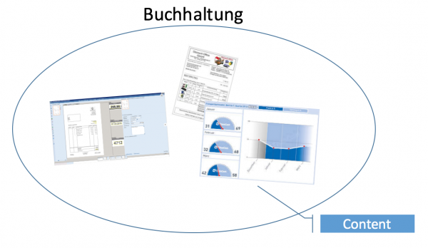

Ist das Content oder kann das weg?
Alle Aufgaben im Büro haben ein Ziel: die Produktion von Inhalten (Content). Diesen Begriff benutze ich als Dach für so verschiedene konkrete Produkte wie Rechnungen, Berichte, Überweisungen, Termine, Anträge, Flugtickets usw. usf.
In einer Werkstatt oder Fabrik werden Waren hergestellt. Im Büro sind es Inhalte oder engl. Content.
Inhalte sind die Resultate von Arbeit, für die Mitarbeiter im Office bezahlt werden. Inhaltsproduktion ist ihr Job. Das grenzt Inhalte von anderen Resultaten ab, die deshalb Verschwendung im Sinne des Lean Digital Office sind.
Mehr Inhalte pro Zeiteinheit zu produzieren, Inhalte mit weniger Aufwand und entspannter zu produzieren, dabei kann ich Sie unterstützen.
Beispiele für Inhalte
Mitarbeiter in der Buchhaltung werden z.B. dafür bezahlt, Buchungen vorzunehmen, Überweisungen für Eingangsrechnungen zu tätigen, vollständige Bezahlung von Ausgangsrechnungen sicherzustellen und einen Monatsbericht zu liefern. Buchung, Zahlungseingang und -ausgang sowie Bericht sind die Inhalte der Buchhaltung. Sie manifestieren sich als Einträge in einer Buchhaltungssoftware, Bewegungen auf einem Konto und z.B. PDF-Dokumente zur Vorlage bei der Geschäftsführung.

Flüssig ist die Arbeit der Buchhaltung, wenn diese Inhalte mit möglichst wenig Verschwendung hergestellt werden. Ihre Produktion sollte ohne Abweichung, Zögern und Wiederholung vonstatten gehen.
Die Aufforderungen zur Produktion von Inhalten kommen von außen. Die Buchhaltung wird „getriggert“ z.B. durch Eintreffen eines Eingangsbeleges oder die Uhr, d.h. einen Termin.

Solche Ereignisse stellen für die Buchhaltung Aufgaben dar, die es flüssig abzuarbeiten gilt. Das geschieht in mehr oder weniger aufwändigen Prozessen. Im besten Fall entsteht dabei Content verschwendungsfrei. Doch allzu oft ist das leider nicht der Fall:
- Eine Eingangsrechnung wird kopiert, um sie in mehreren Ordnern abzuheften. Verschwendungsart Wiederholung.
- Eine PDF-Eingangsrechnung wird ausgedruckt, um sie einem Projektleiter zur Prüfung vorzulegen. Verschwendungsarten Wiederholung und Zögern.
- Eine Überweisung wird nicht getätigt, weil unklar ist, welche Zahlungsweise mit dem Lieferanten vereinbart wurde. Verschwendungsart Zögern.
- Die vollständige Zahlung einer Rechnung erfordert mehrmaliges Nachhaken beim Kunden. Verschwendungsarten Abweichung und Zögern.
Die Symptome solcher Verschwendung sind vielfältig: Stress, Lieferantenunzufriedenheit, Kundenunzufriedenheit, suboptimaler Cashflow.
Diese Sichtweise lässt sich auf alle anderen Tätigkeiten im Büro anwenden: Ob Sie Ingenieur, Sachbearbeiter, Key Account Manager, Sekretärin oder Chef sind, stets ist Ihre Aufgabe im Office die schlanke Produktion von Inhalten.
Inhalte aufspüren
Ausgangspunkt für eine Analyse der Situation in einer Organisation oder auch nur eines Arbeitsplatzes ist für mich daher die Frage: Um welche Inhalte geht es hier eigentlich? Für welchen Content werden Mitarbeiter bezahlt?
Aufschlussreich ist zu diesem Zweck die Suche nach Ereignissen. Was wird als „Da ist etwas passiert!“ wahrgenommen.
Denn Ereignisse zeigen einerseits an, dass Contentproduktion getriggert wurde. Wir können dann überlegen, welche Aufgaben sich aus dem Ereignis ergeben und zu welchen Inhalten die führen. Beispielhafte Ereignisse dieser Art sind: „Der Kunde hat den Auftrag unterschrieben zurückgeschickt.“ oder „Eine Lieferantenrechnung ist eingetroffen.“ oder „Der Projektleiter hat eine Aufwandsabschätzung erbeten.“
Andererseits zeigen Ereignisse an, dass Inhalte produziert wurden. Ihre Fertigstellung ist im wahrsten Sinn des Wortes ein Ereignis, das es zu feiern gilt 😉 Mehr davon! Inhalte sind gut! Verschwendung ist schlecht. Beispiele für solche Ereignisse sind: „Der Quartalsbericht wurde an den Geschäftsführer geschickt.“ oder „Die Rechnung wurde überwiesen.“ oder „Der Website wurde vom Kunden abgenommen.“
Meine Beobachtung ist, dass in vielen Unternehmen nicht wirklich klar ist, welche Inhalte in ihren Offices wirklich produziert werden (sollten). Offensichtliche Inhalte sind natürlich bekannt, z.B. der Auftrag als Inhalt des Vertriebs. Aber häufig werden Verschwendungen als Content missverstanden, z.B. dass Buchhaltungsmitarbeiter Mahnungen versenden und mit Kunden telefonieren, um Zahlungseingänge herzustellen, ist pure Verzögerung und Abweichung. Bei gewissen Zahlungsvereinbarungen mag es nötig sein, ein Mahnverfahren zu haben – doch es ist für keine Abteilung im Unternehmen wünschenswert, dass es davon mehr gebe. Vielleicht sollte also über andere Zahlungsvereinbarungen nachgedacht werden?
Schluss mit harter Arbeit für Inhalte
Dass etwas getan wird, dass ein Mitarbeiter sich fleißig bemüht, ist kein Garant dafür, dass dieser Aufwand auf geradem Weg zum Inhalt führt. Das verbreitete Ideal harter Arbeit ist leider auch ein Ergebnis verschwendungsreicher Arbeit, die sich angesichts ihrer Ineffizienz sehr, sehr anstrengen muss, ein Minimum an Inhalten herzustellen.
Ich bin gegen hartes Arbeiten. Mein Ideal ist kluge, flüssige, schlanke, auf das Wesentliche konzentrierte, verschwendungsarme Arbeit oder kurz: smartes Arbeiten.
Harte Arbeit laugt aus. Sie verschleißt den Menschen. Das ist über kurz oder lang der Quantität und Qualität der hergestellten Inhalte abträglich. Mir fällt es schwer vorzustellen, dass ein wirtschaftlich denkener Unternehmer das wollen kann.
Deshalb nehme ich an, dass der unbewusste Umgang mit Inhalten im Büro nicht Unwillen, sondern Unkenntnis geschuldet ist. Es fehlt ein systematischer Blick auf Arbeit im Office. Für die Waren- und Dienstleistungsproduktion ist der viel selbstverständlicher.
Doch im Büro… da geht man immer noch davon aus, dass es quasi von selbst systematisch funktioniert. Nur, so ist es nach meinen Beobachtungen bei Freelancern, kleinen Handwerksbetrieben oder Abteilungen in Großunternehmen aber nicht. Content wird eben nicht systematisch produziert. Content wird nicht systematisch von Verschwendung unterschieden.
Fazit
Wenn Ihnen also die Schweißperlen auf der Stirn stehen vor lauter harter Arbeit, wenn Sie sich gestresst im Office fühlen, wenn Sie bemerken, wie Sie trotz allem Bemühen immer wieder unzuverlässig sind was Termine und/oder Inhaltsqualität angeht… dann steht für mich die Frage im Raum:
Ist das Content, was Sie da gerade bearbeiten, oder kann das weg?
Denn nur, was Content ist, verdient wirklich Ihre ganze Mühe. Alles andere gilt es bis auf das absolute Minimum zu reduzieren. Weg mit der Verschwendung in Form von Abweichung, Zögern und Wiederholung!
Content is king! 🙂
Weitere Artikel

Regeln für KI im Office
ChatGPT & Co haben sich schnell in die Herzen und Alltag von vielen Menschen im Berufs- und Privatleben gespielt. Diese neuen Werkzeuge eröffnen uns viele Chancen, nicht nur effizienter zu werden, sondern auch kreativer. Aber …

KI als Copilot für die Assistenz
KI in Form von ChatGPT & Co sind hervorragende neue Werkzeuge im Office-Alltag, um produktiver und ja, auch kreativer, zu werden. Neugier statt Angst ist angezeigt im Umgang mit diesen Werkzeugen, die wie andere Werkzeuge auch …